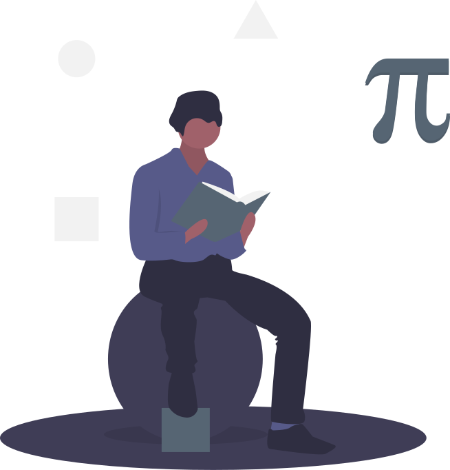

Menghitung luas segitiga siku-siku apabila diketahui panjang sisi miring dan salah satu besar ukuran sudut selain sudut siku-siku.
Menghitung keliling segitiga siku-siku apabila diketahui panjang sisi miring dan salah satu besar ukuran sudut selain sudut siku-siku.